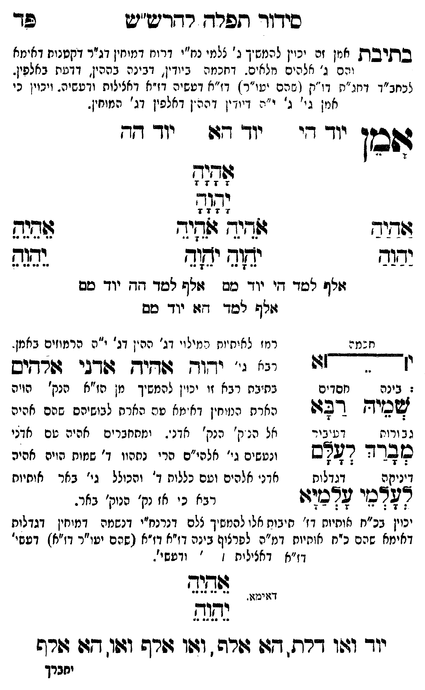

Neue Klartextfassung
[אמן זה יכוין להמשיך ג' צלמי נרנח"י דרוח דמוחין דנרנח"י דקטנות דאימא והם ג' אלהים מלאים. דחכמה ביודין, דבינה בההין, דדעת באלפין. לכחב"ד דחג"ת דו"ק (שהם יעו"ר) דז"א דעשיה דז"א דאצילות ודעשיה. ויכוין כי אמן גי' ג' י"ה דיודין דההין דאלפין דג' המוחין.] אמן === טבלה === יוד הי יוד הא יוד הה אָהָיָהָ יָהָוָהָ [טור ימין] אַהַיַהַ יַהַוַהַ [טור אמצעי] אֹהֵיָהֵ אֹהֵיָהֵ יֹהֵוָהֵ יֹהֵוָהֵ [טור שמאל] אֵהֵיֵהֵ יֵהֵוֵהֵ אלף למד הי יוד מם אלף למד הה יוד מם אלף למד הא יוד מם === סוף טבלה === [רמז לאותיות כמילוי דג' ההין דג' י"ה הרמוזים באמן. [?]] === טבלה === [חכמה] [צורת י ואלף המחוברות בקו עליון.] בינה חסדים שמיה רבא גבורות דעיבור מברך לעלם דיניקה דגדלות לעלמי עלמיא === סוף טבלה === [כ"ח גי' יהוה אהיה אדני אלהים.] [בתיבת כח זו יכוין להמשיך מן הז"א הנק' הויה אלהים המוחין ולהמשיך מהם לבושים שהם אהיה אל הנוק' הנק' אדני. ומתחברים הויה עם אדני ונעשים ג' אלהים הרי נתקנו ד' שמות הויה אהיה אדני אלהים ועם כללות ד' והכולל גי' כתר להחיות כחב"ד כי זו הנק' הנוק' כתר. [?]] [יכוין בכ"ח אותיות דז' תיבות אלו להמשיך ל"ם דנרנח"י דנשמה דמוחין דגדלות דאימא שהם כ"ח אותיות דמ"ה לפרצוף בינה דז"א דו"ק (שהם יעו"ר דז"א) דעשיה דז"א דאצילות ודעשיה.] אֵהֵיֵהֵ יֵהֵוֵהֵ [דאימא.] יוד ואו דלת, הא אלף, ואו אלף ואו, הא אלף
Original gegen neue OCR · Niqqud für Vergleich ausgeblendet
Original
[אמן זה יכוין להמשיךK172-001 ג' צלמי נרנח"י דרוח דמוחין דנרנח"י דקטנותK172-002 דאימא והם ג' אלהים מלאים. דחכמה ביודין, דבינה בההין, דדעתK172-003 באלפין. לכחב"ד דחג"ת דו"ק (שהם יעו"ר)K172-004 דז"א דעשיהK172-005 דז"א דאצילות ודעשיה.K172-006 ויכוין כי אמן גי' ג' י"ה דיודין דההיןK172-007 דאלפין דג' המוחין.] אמן === טבלה ===K172-008 יוד היK172-009 יוד האK172-010 יוד ∅K172-011 הה אהיה יהוה [טור ימין] אהיה יהוה [טור אמצעי] אהיה אהיה יהוה יהוה [טור שמאל] אהיה יהוה אלף למד הי יוד מם אלף למד הה יוד מם אלף למד הא יוד מם === סוף טבלה === [רמז לאותיות כמילוי דג' ההיןK172-012 דג' י"ה הרמוזים באמן. ] === טבלה === [חכמה] [צורת י ואלף המחוברות בקו עליון.]K172-013 בינה חסדים שמיהK172-014 רבא גבורות דעיבור מברך לעלם דיניקה דגדלות לעלמי עלמיא === סוף טבלה === [כ"ח גי' יהוה אהיה אדני אלהים.] [בתיבת כחK172-015 זו יכוין להמשיך מן הז"א הנק' הויה אלהים המוחין ולהמשיך מהם לבושיםK172-016 שהם אהיה ∅K172-017 אל הנוק'K172-018 הנק' אדני.K172-019 ומתחברים הויה עםK172-020 אדני ונעשים ג' אלהיםK172-021 הרי נתקנוK172-022 ד' שמותK172-023 הויה אהיה אדניK172-024 אלהים ועםK172-025 כללות ד' והכולל גי' כתר להחיות כחב"דK172-026 כי זו הנק'K172-027 הנוק' כתר. ] [יכויןK172-028 בכ"ח אותיות דז' תיבותK172-029 אלו להמשיך ל"םK172-030 דנרנח"י דנשמה דמוחיןK172-031 דגדלות דאימא שהם כ"ח אותיותK172-032 דמ"ה לפרצוףK172-033 בינה דז"א דו"קK172-034 (שהם יעו"רK172-035 דז"א) דעשיהK172-036 דז"א דאצילות ודעשיה.] אהיה יהוה [דאימא.] יוד ואו דלת, הא אלף, ואו אלף ואו, הא אלףK172-037
OCR · fehlbar
כידור תפרד. רדריש"יע שד בתיבת אחין זר יכיין להמשךK172-001 ג' גלמי ננז"י דרויז דמיחין דגיר דקטנוחK172-002 דאימא והם ג' אלהים מלאים . דנמי: ביודין. דגינה בההי' דדטחK172-003 באלפין. לכחב"ך דיזנ"ת דז '(ן ( ג הם יטי"ר.]K172-004 דז"א ועשיהK172-005 דז"א דאצילות ודעשיה-K172-006 ויכוין כי אמן גי' ג' י"ה דייז'ין דהה.ןK172-007 דאלפין דג' המוחין. ד9בזן יוך ד(י יו- -94 יו- קד שמוח 4 0. 4 24 פלללפ . לל[לל 3 0 זודיד דיד. גפשיד א(בנ ידגב י ץד יג[ר נבגה זקף ליטד דיK172-008 יוד טס זזלש לסוד זד.K172-009 יוד םם זש לך דז:K172-010 יוד טס גמ : רמז לאיתיוח י מילוי דג'K172-011 הה יןK172-012 דג' י"ה הרמוזים באמן. . [[[ן ל ר' ר-ז7ו יני י' ידוד דיך דגי שרחיש .K172-013 בינה חסדים בת"בתK172-014 רבא ∅K172-015 זו יכוין להמשיך מן הז"א הנק' הוה אשמיד דב 7 עצרח הנו חין דא מא טה הארח לבישיהםK172-016 שהם אהיה נ ב ורות לשלשלK172-017 אל הנ ק'K172-018 הנק' אדנ'.K172-019 ומתחברים אהיה טםK172-020 אדני פובדד דאס ונטשים גי' אלהי"םK172-021 הרי נתהווK172-022 ד' שנזותK172-023 הויה אהיה דיניקה דנדלות אדנ'K172-024 אלהים וטםK172-025 כללות ד' והכולל גי' באר אותיות אלץכי צדכז:ו רבאK172-026 כי אז נק'K172-027 הנוק' באר. יכויןK172-028 בכ"ח אותיות דז' חיבותK172-029 אלו להמשיך צלםK172-030 דנרנח"י דנשמה דמיחיןK172-031 דגדלות דאימא שהם כ"ח א(תיוחK172-032 דמ"ה לפרציףK172-033 בינה דז"א דז"אK172-034 (שהם יו"רK172-035 דז"א) דעשי'K172-036 דז"א דאצילות ז ' ודעשי'. א(שנ- - נג. 64[-ז-] נה(ש יודך וגלו דרת . 77 גדורה . וזו :פרפ וג(ו. דגה גורש יחברךK172-037